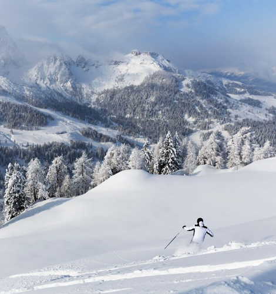
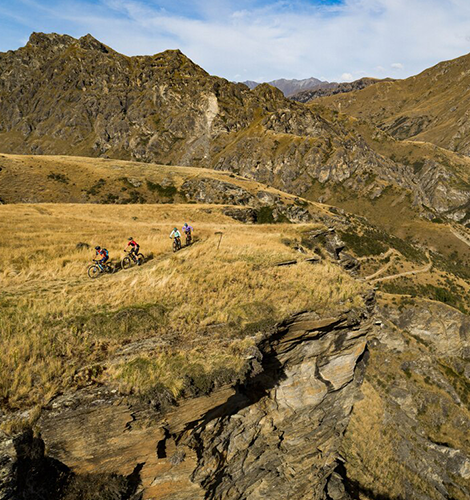
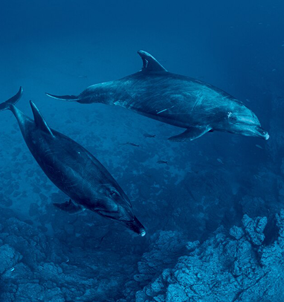
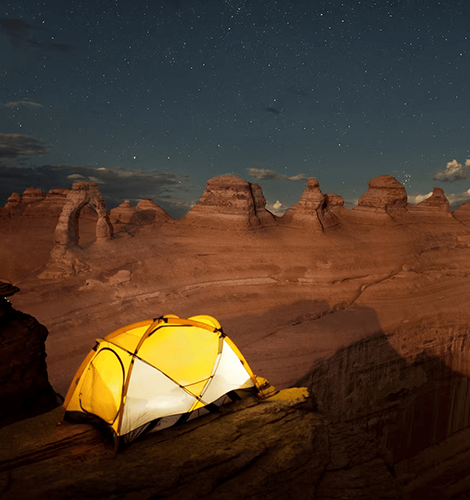

NATIONAL GEOGRAPHIC
5 adrenaline-pumping adventures in 2023
TRAVEL
- 
- 
- 
- 
Utah
With five national parks and eight national monuments, Utah is an adventurer’s dream destination. But outdoor lovers tend to visit only a small and iconic group of destinations, such as Zion National Park. Now the Utah Office of Outdoor Recreation has created an innovative grant program to help fund new initiatives throughout the state, including the Zion National Park Forever Project.
In Zion, known for its dramatic narrow canyons and towering sandstone cliffs, work began in 2022 on a new visitor center on the park’s east side. The hope is to draw some of Zion’s five million annual visitors away from the crowded main south entrance and popular trails like Angels Landing. In addition to the visitor center, plans include 30-plus miles of new mountain biking trails and 40 miles of hiking trails outside the east entrance.
“Outdoor recreation is a cash cow for Utah. It contributes more than $6.4 billion to the economy, employs more than 83,000 people, and generates $737 million in state and local tax revenues,” says Stephanie Pearson, author of National Geographic’s 100 Great American Parks. These efforts will keep Utah’s outdoor industry booming, while protecting fragile ecosystems.
Choquequirao, Peru
One of the most remote Inca sites in the Peruvian Andes, the ruins of Choquequirao are reserved for the hardy. Those who make the trek can do so only on foot, zigzagging up and down vertiginous paths for 18 miles before accessing the sprawling complex suspended at 10,000 feet between the high Andes and the jungles below.
“Many myths exist around Choquequirao,” says Gori-Tumi Echevarría, an archaeologist who first worked at the ruins in 2005. Its many temples, terraces, and plazas have yet to be fully excavated. Among the ancient city’s most intriguing features: the Llama Terraces, named for the two dozen nearly life-size llama images that cascade down the face of a series of steep terraces. The llamas are formed from quartzlike white rocks that vividly stand out against the dark schist background unique stone artwork found at no other Inca site.
“There is nothing else like this in the Andes. It was graphic innovation that occurred prior to the 16th century and was not repeated,” says Echevarría, who specializes in prehistoric rock art. But change is coming to rock the “cradle of gold,” the meaning of Choquequirao in the Indigenous Quechua language. New infrastructure plans are expected to boost visitation to Machu Picchu’s sister city.
Austrian Alps
To save a mountain range, it sometimes takes a village. Since 2008 an association of high-altitude hamlets located in Central Europe’s Eastern Alps has banded together to promote their small communities to the world’s adventure travelers interested in mountain hiking, biking, and climbing, as well as winter sports like cross-country skiing and ice climbing.
Called the Bergsteigerdörfer, or the “Mountaineering Villages,” the network is concentrated primarily in Austria’s western states, including Tyrol and Carinthia, with additional member towns in Switzerland, Germany, Italy, and Slovenia. The Bergsteigerdörfer works to protect the culture and traditions of its 36 villages while preserving mountain landscapes from overdevelopment. Rejecting large scale tourist projects like sprawling ski lodges and peak-scaling cable cars, the Bergsteigerdörfer puts greater emphasis on green or sustainable mountain tourism.
Revillagigedo National Park, Mexico
Some 300 miles off the southern tip of the Baja California Peninsula lies a national park steeped in superlatives. Revillagigedo National Park, a 57,000-square-mile Mexican marine reserve, is North America’s largest fully protected underwater park. It offers sanctuary to the continent’s greatest concentration of tropical marine megafauna, from hammerhead sharks to humpback whales, earning it the nickname “the Galápagos of Mexico.” And the waters surrounding its four main islands are fast becoming a mecca for scuba divers.
“The park is one of the few places, if not the only place on the planet, that you can have intimate interaction with giant oceanic mantas,” says marine biologist and underwater filmmaker Erick Higuera. He says the mantas, which can weigh up to 3,600 pounds and attain a wingspan of 27 feet, seem to like the feel of the divers’ air bubbles on their bellies.
New Zealand
The country that brought you bungee jumping is bouncing back from the pandemic. On New Zealand’s South Island, a reenergized Queenstown is again welcoming adventure travelers from all over the world. They come to this lakeside town of some 15,000 for skiing, as well as year-round hiking in the appropriately named Remarkables range.
But bicycles should be generating the most excitement. By 2025, the Queenstown Trails Trust aims to complete a network of recreational and commuting bike lanes and paths that will link up workplaces, schools, and other urban spaces. The network’s shining star: an 80.7-mile biking route called the Queenstown Trail, one of New Zealand’s Great Rides. Starting on the shore of Lake Wakatipu, the Ride pedals east from Queenstown to Gibbston.
Comments :
- john Very good
- john Very good
Leave a Reply
Your email address will not be published. Required fields are marked*
Related posts:
-
 'Hispanic' 'Latino' Here’s where the terms come from
'Hispanic' 'Latino' Here’s where the terms come fromChoosing the term Hispanic or Latino as a source of identity is more complicated than just applying a label. A person whose grandparents came from Spain, a person with Indigenous Mexican heritage, and someone
View article -
 How Martin Luther King, Jr.’s multifaceted view on human rights still inspires today
How Martin Luther King, Jr.’s multifaceted view on human rights still inspires todayThe Reverend Martin Luther King, Jr. towers over history as a civil rights legend known for leading the movement to end segregation and counter prejudice against Black Americans in the 1950s and 1960s, largely through peaceful protests.
View article -
 Struggle for voting rights continues 58 years after historic March on Washington
Struggle for voting rights continues 58 years after historic March on WashingtonTerry G. Collins is no stranger to peaceful protest. The Birmingham, Alabama native visited churches with his parents as a child where civil rights leaders talked about challenging injustices. In 1963, at 15 years old, he was subject
View article